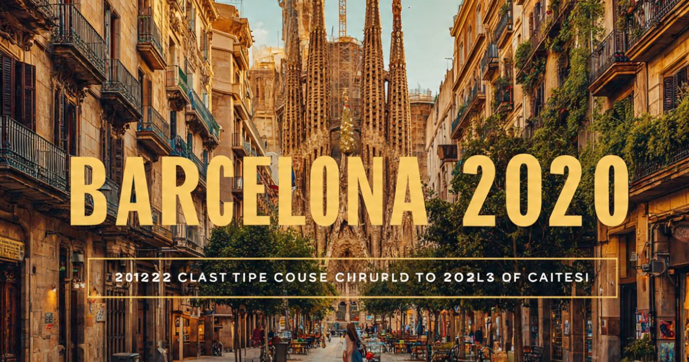

Barcelona 2026: guia completo para viajar para a capital da Catalunha
Introdução: a cidade que respira arte e cultura
Barcelona é, sem dúvida, uma das cidades mais vibrantes e fascinantes da Europa. Capital da Catalunha, a cidade combina história, arte, cultura, praias e gastronomia de uma forma única. Seja para explorar as obras de Gaudí, caminhar pela famosa La Rambla, relaxar nas praias do Mediterrâneo ou saborear a deliciosa culinária catalã, Barcelona oferece experiências inesquecíveis para todos os perfis de viajantes.
Em 2026, Barcelona continua sendo um dos destinos preferidos dos viajantes brasileiros. A cidade se prepara para receber turistas do mundo inteiro com uma infraestrutura cada vez mais moderna, mantendo seu charme histórico e sua essência única. Com a recente conclusão de obras de revitalização urbana, a cidade oferece uma experiência ainda mais agradável para os visitantes.
Neste guia completo sobre Barcelona, você vai encontrar tudo o que precisa saber para planejar sua viagem: a melhor época para visitar, as atrações imperdíveis, os melhores bairros para se hospedar, como se locomover pela cidade, dicas de gastronomia, compras e muito mais.
Nosso objetivo é que você chegue a Barcelona preparado para aproveitar ao máximo cada minuto nessa cidade fascinante. Afinal, Barcelona é mais do que um destino — é uma experiência que combina arte, cultura, praia e boa comida em um só lugar.

A impressionante Sagrada Família, obra-prima de Antoni Gaudí
Melhor época para visitar Barcelona
Barcelona tem um clima mediterrâneo, com verões quentes e invernos amenos. A escolha da melhor época depende do que você busca na viagem.
Primavera (março a maio) — Uma das melhores épocas para visitar Barcelona. As temperaturas são agradáveis (entre 15°C e 25°C), as flores desabrocham nos parques da cidade e os dias ficam mais longos. A cidade ganha vida após o inverno, com uma atmosfera vibrante e colorida. Os preços dos hotéis começam a subir com a chegada da alta temporada.
Verão (junho a agosto) — Época mais quente do ano, com temperaturas que podem ultrapassar 30°C. A cidade fica cheia de turistas, os preços são mais altos e as filas nas atrações são longas. No entanto, o verão oferece uma programação intensa de eventos, festivais ao ar livre, noites quentes e a oportunidade de aproveitar as praias. É a época mais animada da cidade.
Outono (setembro a novembro) — Muitos consideram o outono a melhor estação para visitar Barcelona. As temperaturas são agradáveis (entre 15°C e 25°C), o sol ainda está presente, e a cidade oferece uma atmosfera charmosa e relaxada. A alta temporada começa a diminuir após setembro, com preços mais acessíveis. É a época da colheita e dos festivais de vinho.
Inverno (dezembro a fevereiro) — O inverno em Barcelona é ameno, com temperaturas entre 8°C e 15°C. A cidade se enche de luzes de Natal e decorações especiais. É uma época mais tranquila, com menos turistas e preços mais baixos. Para quem não gosta de calor, esta é a melhor época.
Dica: Se você busca um equilíbrio entre clima agradável e preços razoáveis, a primavera (abril/maio) e o outono (setembro/outubro) são as melhores escolhas. Evite os meses de junho e julho (alta temporada de férias) se quiser economizar.
O que fazer em Barcelona: atrações imperdíveis
Barcelona tem uma lista quase infinita de atrações. Separamos as imperdíveis para que você não perca nada:
Sagrada Família — A obra-prima de Antoni Gaudí e o símbolo máximo de Barcelona. A basílica é uma das igrejas mais impressionantes do mundo, com sua arquitetura única e sua fachada cheia de detalhes. A visita ao interior e a subida às torres são experiências imperdíveis. Reserve ingressos com antecedência!
Parque Güell — Outra obra de Gaudí, este parque é um dos mais famosos de Barcelona. Com seus mosaicos coloridos, bancos ondulados e a famosa salamandra (el dragón), o parque oferece uma vista panorâmica da cidade. É um dos lugares mais fotogênicos de Barcelona.
La Rambla — A avenida mais famosa de Barcelona, cheia de vida, artistas de rua, flores, barracas e restaurantes. Caminhar pela La Rambla é uma experiência essencial para qualquer visitante. Não deixe de visitar a Boqueria, o mercado mais famoso da cidade.
Bairro Gótico (Barri Gòtic) — O coração histórico de Barcelona, com ruas estreitas e sinuosas, praças charmosas e edifícios medievais. Explore a Catedral de Barcelona, a Praça do Rei e as ruínas romanas. O bairro é um labirinto cheio de história e surpresas.
Casa Batlló e Casa Milà (La Pedrera) — Duas das obras mais famosas de Gaudí na cidade. A Casa Batlló é conhecida por sua fachada colorida e seu telhado em forma de dragão. A Casa Milà, conhecida como La Pedrera, tem um telhado com chaminés esculturais que parecem soldados. Ambas são Patrimônios Mundiais da UNESCO.
Camp Nou — O estádio do FC Barcelona, um dos maiores e mais famosos do mundo. Visite o museu do clube, faça o tour pelo estádio e conheça a história do Barça. É uma experiência imperdível para os fãs de futebol.
Praia de Barceloneta — A praia mais famosa de Barcelona, com sua areia dourada e sua atmosfera animada. Relaxe ao sol, tome um banho de mar ou caminhe pelo calçadão. A praia é cercada por restaurantes e bares, perfeitos para um almoço ou um drink ao pôr do sol.
Montjuïc — A colina que oferece a melhor vista de Barcelona. Visite o Castelo de Montjuïc, o Palácio Nacional (atual Museu Nacional de Arte da Catalunha) e o Estádio Olímpico. A vista do pôr do sol de Montjuïc é espetacular.
Parc de la Ciutadella — O parque mais famoso de Barcelona, com lagos, jardins, a fonte monumental e o zoológico. É o lugar perfeito para um piquenique ou um passeio tranquilo.
Onde ficar em Barcelona: melhores bairros
Escolher onde se hospedar é uma das decisões mais importantes da viagem. Cada bairro de Barcelona tem sua personalidade:
Ciutat Vella (Bairro Gótico, El Born) — O centro histórico de Barcelona, com ruas estreitas, praças charmosas e uma atmosfera vibrante. Ficar aqui significa estar perto das principais atrações e da vida noturna. Os preços são variados.
Eixample — O bairro modernista de Barcelona, com ruas largas e edifícios de arquitetura impressionante. É onde estão a Sagrada Família, a Casa Batlló e a Casa Milà. É uma área elegante e sofisticada, com preços médios a elevados.
Gràcia — O bairro boêmio de Barcelona, com ruas estreitas, praças charmosas e uma atmosfera de vila. É o lugar certo para quem busca uma experiência autêntica, longe das multidões turísticas. Os preços são mais acessíveis.
Barceloneta — O bairro da praia, com sua atmosfera descontraída e seus restaurantes de frutos do mar. Ficar aqui significa estar perto da praia e da vida noturna. Os preços são moderados.
Dica: Para quem visita Barcelona pela primeira vez, Ciutat Vella (Bairro Gótico) é a melhor opção pela localização central. Para quem busca uma experiência autêntica e economia, Gràcia é a melhor escolha.
Como chegar a Barcelona
Chegar a Barcelona é fácil, com voos diretos do Brasil e conexões eficientes.
Avião — Aeroporto:
- Aeroporto Josep Tarradellas Barcelona-El Prat (BCN) — O principal aeroporto internacional de Barcelona. Recebe voos diretos do Brasil com companhias como LATAM, Air Europa e outras. Fica a cerca de 12 km do centro e tem excelentes conexões de trem e ônibus.
Como ir do aeroporto ao centro:
- Trem (RENFE): Para o centro (€ 4,60, 20 min).
- Metrô (L9): Para o centro (€ 5,50, 30 min).
- Ônibus (Aerobús): Para o centro (€ 6,75, 35 min).
- Táxi: Cerca de € 30-35.
Visto e documentação: Brasileiros não precisam de visto para entrada na Espanha para turismo (até 90 dias). A partir de 2025, o sistema ETIAS pode ser exigido.
Transporte em Barcelona: como se locomover
Barcelona tem uma excelente rede de transporte público, e a cidade também é muito agradável para explorar a pé.
Metrô:
- 8 linhas cobrem toda a cidade de forma eficiente.
- Funciona das 5h às 23h (até 2h nos finais de semana).
- Tarifa: € 2,40 por viagem (bilhete simples).
- Use o cartão T-10 (10 viagens por € 11,35) para economizar.
Ônibus:
- Ampla rede de ônibus cobre toda a cidade.
- Tarifa: € 2,40 por viagem.
Bicicletas (Bicing):
- Sistema de compartilhamento de bicicletas com milhares de estações.
- Aluguel anual para residentes, com opções para turistas em estações privadas.
Táxis:
- Tarifa inicial: € 2,50 + € 1,20 por km.
Dica: O metrô é a forma mais econômica e eficiente de se locomover em Barcelona. A cidade também é muito caminhável — muitas atrações ficam a uma curta distância umas das outras.
Gastronomia em Barcelona: o que comer
Barcelona é a capital da gastronomia catalã. Confira o que não perder:
Tapas — As famosas porções espanholas, perfeitas para compartilhar. Experimente a patatas bravas, o jamón ibérico, a tortilla espanhola, as croquetas e os calamares. Os bares de tapas em Barcelona são uma experiência social imperdível.
Paella — O prato mais famoso da Espanha, preparado com arroz, frutos do mar, frango e especiarias. A paella é uma refeição completa e saborosa. Experimente na Barceloneta ou em restaurantes especializados.
Crema Catalana — A sobremesa catalã por excelência, semelhante ao crème brûlée francês. Cremosa, com uma camada de açúcar caramelizado.
Mercados gastronômicos:
- Mercado da Boqueria: O mercado mais famoso de Barcelona, com frutas, frutos do mar, carnes e comidas de rua.
- Mercado de Santa Caterina: Mercado coberto com opções gastronômicas.
Compras em Barcelona: o que levar para casa
Barcelona é um paraíso para as compras, com opções para todos os gostos.
Passeig de Gràcia: A rua do luxo, com lojas da Gucci, Prada, Louis Vuitton, Chanel e outras grifes.
El Born: Bairro com lojas independentes, boutiques e artesanato.
La Rambla: Barracas de souvenirs, flores e artesanato.
Souvenirs:
- Miniaturas da Sagrada Família e do Parque Güell
- Chaveiros e imãs com símbolos de Barcelona
- Produtos gastronômicos (azeite, presunto, especiarias)
- Cerâmicas e azulejos catalães
- Camisetas do FC Barcelona
Dicas de economia em Barcelona
- Compre ingressos com antecedência — Para a Sagrada Família e o Parque Güell, compre ingressos online para evitar filas e conseguir preços melhores.
- Use o cartão T-10 — O passe de 10 viagens de metrô e ônibus é a forma mais econômica de se locomover.
- Alimente-se em mercados e tapas bars — Em vez de restaurantes caros, experimente os mercados e os bares de tapas para uma refeição saborosa e econômica.
- Visite museus em dias gratuitos — Muitos museus têm entrada gratuita em determinados dias ou horários.
- Fique fora do centro — Bairros como Gràcia e Sants têm hotéis mais baratos que o centro.
Barcelona é uma cidade que combina arte, cultura, praia e gastronomia de forma única! Compre ingressos com antecedência para a Sagrada Família e o Parque Güell, use o cartão T-10 para economizar no transporte, e não deixe de explorar o Bairro Gótico e a Barceloneta. E o mais importante: caminhe! As melhores descobertas em Barcelona acontecem andando pelas ruas da cidade.
❓ Perguntas Frequentes sobre Barcelona
Recomenda-se pelo menos 5 a 7 dias para explorar Barcelona com calma. Com 5 dias, você consegue visitar as principais atrações. Com 7 dias, pode incluir visitas a praias e bairros menos turísticos.
A primavera (abril/maio) e o outono (setembro/outubro) são as melhores épocas, com temperaturas agradáveis. O verão é quente e lotado. O inverno é ameno e mais tranquilo.
Não. Cidadãos brasileiros não precisam de visto para turismo na Espanha (até 90 dias). A partir de 2025, o sistema ETIAS pode ser exigido.
Uma viagem de 7 dias para Barcelona custa entre R$ 7.000 e R$ 18.000 (incluindo passagens, hospedagem, alimentação e atrações).
Dia 1: Sagrada Família, Parque Güell, Casa Batlló; Dia 2: La Rambla, Boqueria, Bairro Gótico, Catedral; Dia 3: Barceloneta, Montjuïc, Camp Nou.
Sim. Barcelona é segura para turistas. Cuidado apenas com furtos em locais turísticos, especialmente na La Rambla e no metrô.
Sim. O metrô de Barcelona é moderno, limpo e fácil de usar. As estações têm sinalização clara e o sistema é intuitivo. Use o cartão T-10 para economizar.
No verão: roupas leves, protetor solar, chapéu, biquíni/roupa de banho. No inverno: casaco leve. Calçados confortáveis para caminhar. Adaptador de tomada (tipo F).